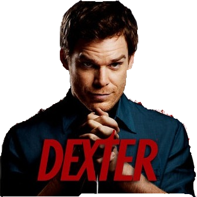
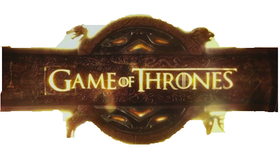
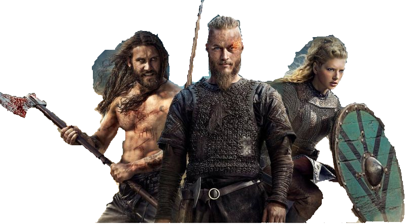

Dexter |
Game Of Thrones |
Vikings |
 |
 |
 |
Résumé : Brillant expert scientifique du service médico-légal de la police de Miami, Dexter Morgan est spécialisé dans l'analyse de prélèvements sanguins. Mais voilà, Dexter cache un terrible secret : il est également tueur en série. Un serial killer pas comme les autres, avec sa propre vision de la justice. |
Résumé : Il y a très longtemps, à une époque oubliée, une force a détruit l'équilibre des saisons. Dans un pays où l'été peut durer plusieurs années et l'hiver toute une vie, des forces sinistres et surnaturelles se pressent aux portes du Royaume de Winterfell, appartenant aux Starks, une famille controversée, pour obtenir le Trône de Fer, le symbole du pouvoir absolu. |
Résumé : Scandinavie, à la fin du 8ème siècle. Ragnar Lodbrok, un jeune guerrier viking, est avide d'aventures et de nouvelles conquêtes. Lassé des pillages sur les terres de l'Est, il se met en tête d'explorer l'Ouest par la mer. Malgré la réprobation de son chef, Haraldson, il se fie aux signes et à la volonté des dieux, en construisant une nouvelle génération de vaisseaux, plus légers et plus rapides... |